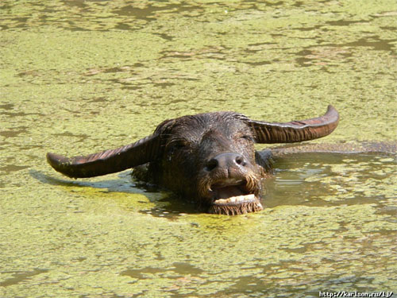

BUFALO D'ACQUA
|
 |
Ambiente/Habitat | Paludi ed Acquitrini |
| Frequenza | Uncommon | |
| Organizzazione | Solitario o Piccolo Gruppo | |
| Periodo di Attività | Giorno | |
| Dieta | Erbivoro | |
| Intelligenza | Animal Intelligence (1) | |
| Punti Combattimento | Nessuno | |
| Tesoro | Nessuno | |
| Allineamento Dominante | Neutrale | |
| Numero di Apparizione | 1d12: (1-7) 1 (8-12) 1d3+2 | |
| Classe Armatura | 6 [10 base, 3 corazza, 1 destrezza] | |
| Movimento | 10 esagoni /Nuotare 4 esagoni | |
| Dadi Vita | 5 (+8 punti ferita) | |
| Thac0 | 16 | |
| Numero di Attacchi | Corna | |
| Danni | 2d4+2 (Punta) | |
| Poteri Offensivi | Carica di Sfondamento; Carica Potenziata; |
|
| Poteri Difensivi | Robustezza Superiore (+8 Punti Ferita); | |
| Poteri Generici | Nessuno; | |
| Vulnerabilità | Nessuna; | |
| Resistenza alla Magia | Nessuna; | |
| Sensi | Vista Comune; Sensi Superiori; | |
| Dimensioni | Large (3,5 m. lunghezza) | |
| Morale | Elite (13) | |
| Valore in Punti Esperienza | 430 |
| MODIFICATORI AI TIRI SALVEZZA | |||||||||||||||||||||||
| COR | 0 | 45 | ENV | +5 | 45 | MAG | 0 | 59 | MAL | 0 | 44 | MEN | 0 | 57 | RIF | 0 | 53 | ROB | +5 | 42 | VEL | 0 | 46 |
Descrizione
Mammifero che può raggiungere un migliaio di chili di peso, il Bufalo d'Acqua è fra i bovini di più grandi dimensioni. In particolare è il mammifero con le corna più grandi che possono misurare da un parte all'altra oltre 2 metri.
Combat
Il Bufalo d'Acqua è un animale molto pericolo che spesso carica anche senza alcuna provocazione o pericolo (si considera come un carnivoro ai fini delle sue reazioni). Nonostante le sue dimensioni è in grado di correre e di nuotare a discreta velocità.
CARICA DI SFONDAMENTO (Moderate Special Ability): Questa modalità di attacco è utilizzata dalla creatura solo quando costei esercita con successo di una manovra di carica. Quando effettua questo attacco la creatura potrà godere dei benefici della manovra di carica (bonus di +1 al tiro per colpire e +2 ai danni che si considera dovuto alla forza dell'attaccante) anche qualora effettui tale manovra nei confronti di un avversario che si trovi già in melee, inoltre l'attacco effettuato dalla creatura produce alla vittima della carica 1d6 danni da botta supplementari e la stessa dovrà superare un tiro salvezza su robustezza per non cadere a terra (knockdown). Le vittime della stessa taglia della creatura ottengono un bonus di +10 a tale tiro salvezza, le creature di taglia superiore sono immuni all'atterramento. Le creature con almeno quattro zampe ottengono un bonus di +10 a tale tiro salvezza, quelle che strisciano o si muovono su radici sono immuni all'atterramento. Questi benefici non si applica contro gli avversari che risultano parzialmente coperti da ostacoli fisici, cd. partial cover.
CARICA
POTENZIATA
(Lesser Special Ability):
Il corpo di questa creatura, particolarmente adatto alla corsa, rende più facile
alla stessa di caricare. Per tale motivo la creatura riceve costantemente un
bonus di +4 al tiro
per determinare il successo di una manovra di carica.
LESSER COMBO
-
CARICA
DI SFONDAMENTO e
CARICA POTENZIATA - Le due
abilità costituiscono una combo in quanto la seconda incide in via diretta
sull'utilizzo della prima. In considerazione che, in ogni caso, la possibilità
di utilizzo delle due abilità nel corso di un combattimento, è assai limitata,
la combo può considerarsi minore.
ROBUSTEZZA SUPERIORE (Typical Ability): Il fisico della creatura è estremamente robusto. Ciò conferisce alla stessa una robustezza superiore che gli garantisce 8 punti ferita supplementari.
Habitat/Society
Questo bufalo vive in branchi dominati dalla femmina più forte (quella con più punti ferita) e con al seguito un unico toro. I maschi adulti possono essere incontrati da soli nel 40% dei casi.
Ecology
Data la sua pericolosità non viene addomesticato e solo raramente è cacciato come fonte di cibo da esperti cacciatori e forti predatori.